Criollo
[ Directing, photography, UI/UX, logo ]
A monthly tasting based on using local ingredients and techniques for minimizing waste.

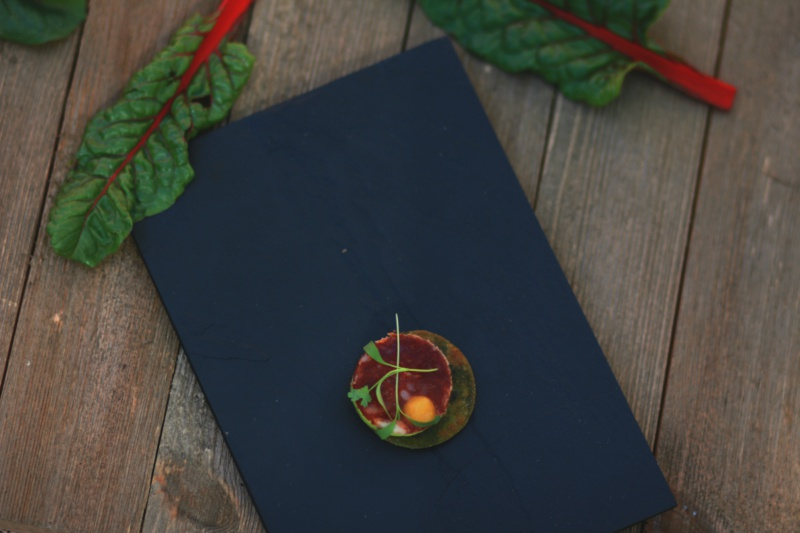
 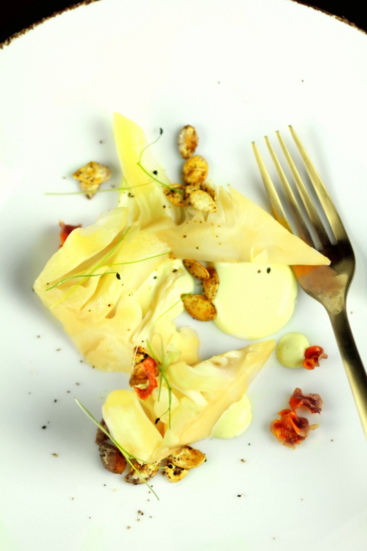
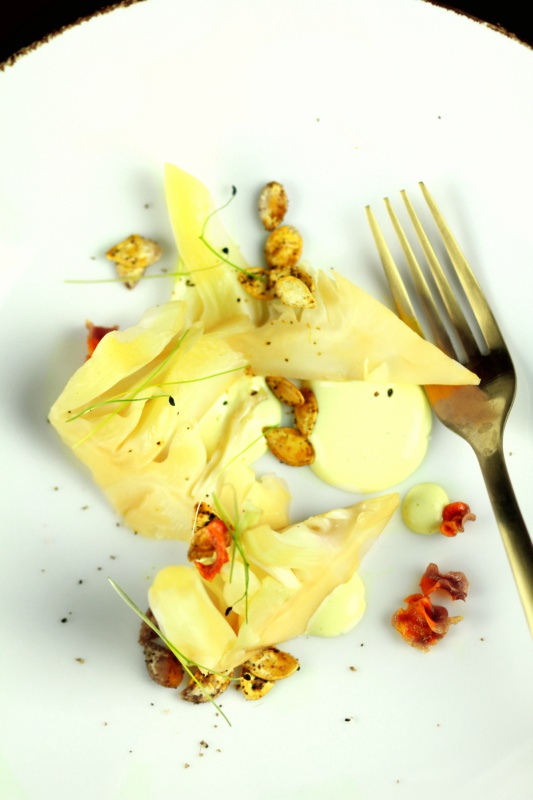


 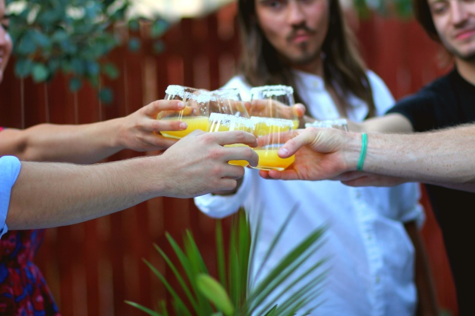
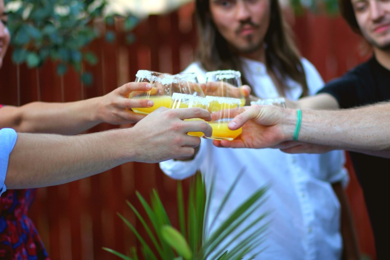
 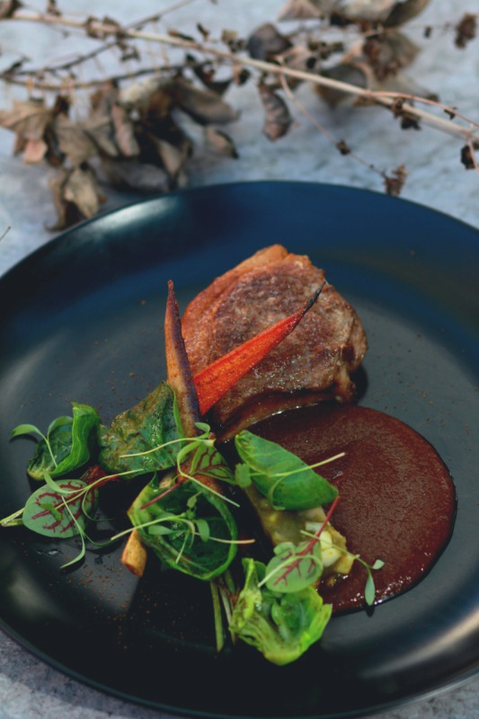
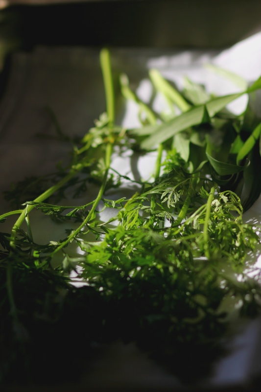
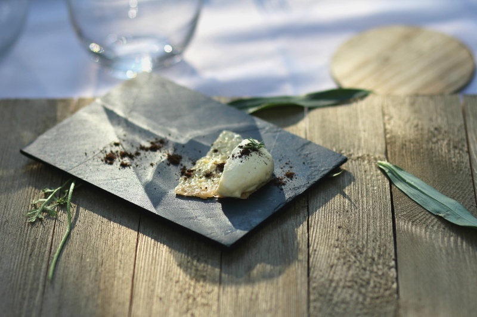
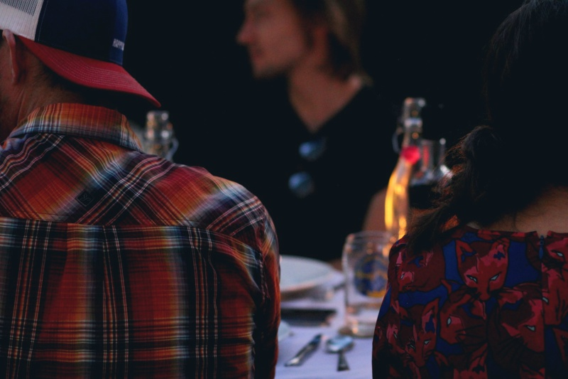
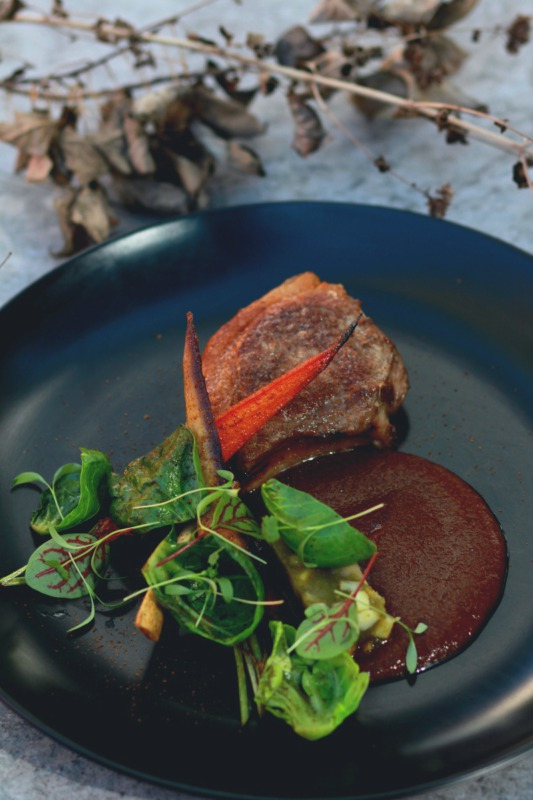
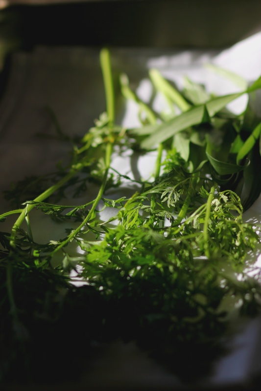
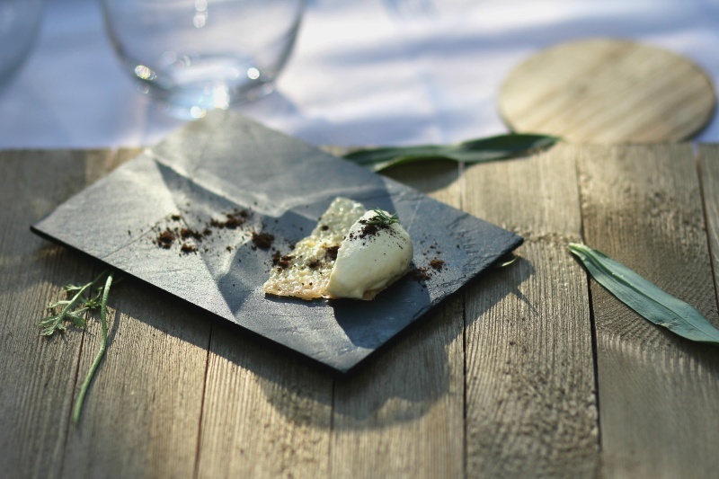
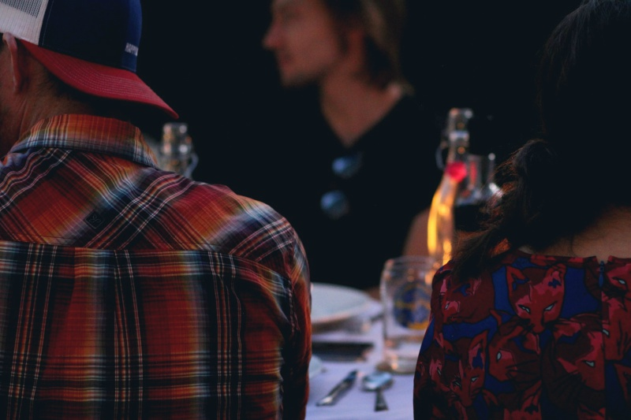
[ Objectives ]
• Create a "hand painted" logo using baby cilantro as inspiration.
• Design and develop a website that introduces the concept to guests and allow users to make a reservation to the next tasting.
• Develop terms and conditions for guests.
• Keep and maintain records of guests who sign up and methods of payments.
• Develop a schedule and overall "feel" of the events that include a 7 course meal, a Q&A with guest chefs, and ending activities.
• Take photographs of the dishes, and document events.
• Maintain communication with guests for future events and respond to feedback.